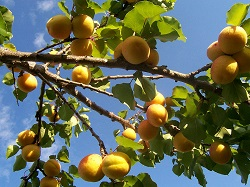

 L'abricot et la pêche sont les deux fruits à noyaux du genre Prunus originaires de Chine. L'abricot est le fruit d'un arbre généralement de petite taille appelé abricotier, de la famille des Rosaceae. Le nom scientifique de l'abricotier est Prunus armeniaca (prune d'Arménie). Il appartient au sous-genre des Prunus, section Armeniaca avec les quatre autres abricotiers du monde. La Turquie est le principal producteur d'Abricot.
Les abricots sont une bonne source de fibres alimentaires (pectines), de potassium et une très bonne source de bêta-carotène (vitamine A) et de vitamine C14. Les pectines, se gonflent facilement d'eau et confèrent du moelleux à sa chair.
La vitamine B qu'il contient est dans le fruit sec deux à trois fois plus abondante que dans le fruit frais. En revanche, déshydraté, l'abricot devient très acidifiant et sa couleur orangée est souvent révélatrice d'une adjonction d'anhydride sulfureux (sulfite - dioxyde de soufre : comme conservateur par vaporisation) qui le rend difficile à digérer (l'abricot brunit en séchant normalement)
Il contient aussi du fer et du potassium alimentaires.
Sec, il est intéressant dans le cadre d'une activité musculaire élevée, grâce à sa richesse en glucides, sans apporter plus de 30 kcal par fruit.
L'amande d'abricot est traditionnellement prescrite contre la toux et la constipation.
L'amande d'abricot, « sert principalement à traiter la toux, à s'opposer au qi ascendant, à traiter les gargouillis tonitruants [de l'intestin], les maux de gorge ».
L'amande amère d'abricot, semen armeniacae amarum (en chinois xingren 杏仁) est décrite actuellement en médecine chinoise traditionnelle (Chen12, 2003, 2008) comme :
goût : amer, sucré, tiède
affinités pour le méridien des poumons (shoutaiyinfei 手太阴肺) et le méridien du gros intestin (shouyangming dachang 手阳明大肠)
fonctions :
- antitussif, anti-asthmatique, dyspnéique
- laxatif, émolliente des intestins
indications :
- bronchite, toux et asthme
- constipation
toxicité : l'amygdaline, le composant actif de l'amande amère est très toxique à forte dose.
En médecine chinoise, l'abricot sec est conseillé pour traiter l'anémie, l'asthme et les sensations de gorge sèche ou de soif.
L'amande amère d'abricot contient de l'amygdaline13, de l'émulsine, et de nombreuses enzymes (amygdaline, prunase etc.). Elle contient aussi des acides gras (acide oléique, acide linoléique les deux constituents principaux et de l'acide palmitique, stéarique et linolénique), du cholestérol, de l'estrone, alpha-estradiol. L'hydrolyse de l'agmygdaline conduit au benzaldéhyde et à l'acide cyanhydrique.
Le nom scientifique de l'abricotier est Prunus armeniaca (prune d'Arménie)